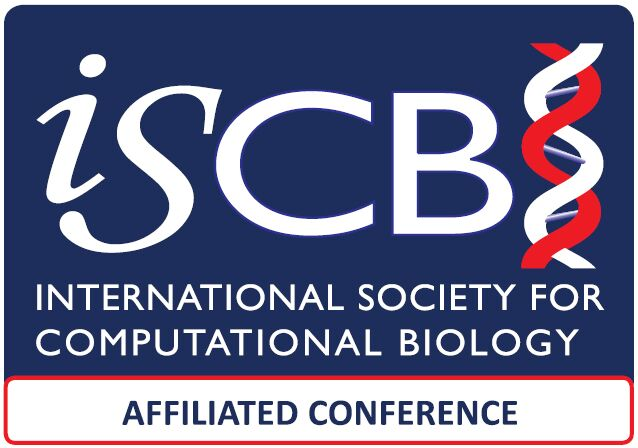
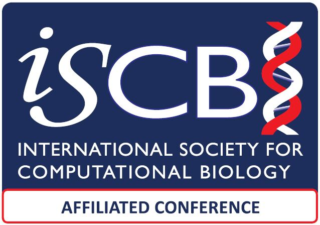

Keynote Speakers
Teresa Przytycka
Senior Investigator
Algorithmic Methods in Computational and Systems Biology (AlgoCSB)
NLM/NCBI
Teresa Przytycka is a Senior Investigator and the Chief of the Computational Biology Branch at the National Center for Biotechnology Information (NCBI), which is part of the National Institutes of Health (NIH) in the United States. The research in her group focuses on developing computational methods for systems biology including application to cancer research and gene regulation and methods for analysis of new types of experimental data. She has worked on various topics, including protein structure prediction, functional annotation of genes, network biology, and cancer genomics. Throughout her career, Teresa Przytycka has published numerous scientific articles in reputable journals and has been actively involved in the bioinformatics research community. She has also served on program committees and advisory boards for several conferences and organizations related to bioinformatics and computational biology.
Anna Gambin
Faculty of Mathematics, Informatics and Mechanics
University of Warsaw
Anna Gambin is a professor at the Faculty of Mathematics, Informatics and Mechanics at the University of Warsaw. Her research interests include computational molecular biology and medicine: bioinformatics for genome rearrangements, algorithms for mass spectra processing, mathematical modelling of signaling pathways, comparative genomics of transposable elements.
Mark Robinson
University of Zurich
Switzerland
Mark Robinson has been an Associate Professor since 2017 after joining the Department of Molecular Life Sciences of the University of Zurich (UZH) in 2011. He studied Applied Mathematics (BSc, Uni. Guelph) and Statistics (MSc, Uni. British Columbia), and did a PhD in statistical bioinformatics at the University of Melbourne. He has predoctoral experience at the Banting and Best Department of Medical Research (Uni Toronto) and postdoctoral experience in Cancer Epigenomics at the Garvan Institute in Sydney. The Robinson group at UZH develops statistical methods for interpreting high-throughput sequencing and other genomics technologies in the context of genome sequencing, gene expression and regulation and analysis of epigenomes, with a current focus on the analysis of single-cell and spatial datasets.

Sagi Snir
University of Haifa
Israel
Sagi Snir is a professor of computational evolution at the University of Haifa in Israel, where he has established and headed the Bioinformatics program for grad students. He is also the President of the Israeli Society for Bioinformatics and Computational Biology. His research combines algorithmic and combinatorial approaches to problems from evolution with focus on phylogenetic trees and networks. He has developed the Quartet MaxCut algorithm to combine conflicting signals between evolutionary trees and other fundamental results on maximum likelihood of trees and network. His papers have been published in both leading pure theoretical computer science venues and pure evolution venues. Ha has organised major national and international conferences in U Haifa.
 
